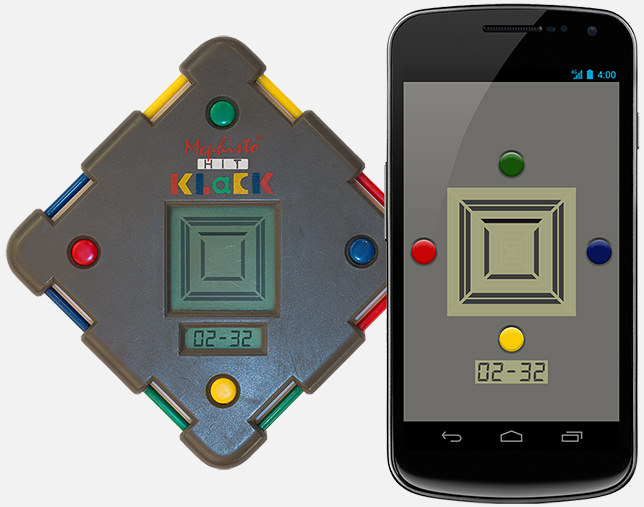

Hitklack Game
This is an just for fun work in progress game remake. It`s based on a German console, the Hit Klack from Mephisto. Its runs on multiple platforms: Android, Windows, Linux, Mac. For me its a way to test the latest features of Kotlin, a programming language by Jetrains. It uses the LibGDX Java game development framework.

Features
For now only one of the two console games is implemented: The Box Game. Features like, restart, level selection, a game over state, the clock and a manual are missing for now.
Box-Game manual
Its your objective to build squares out of four lines. The lines are running automatically but can be stopped by pressing the corresponding button: To stop a line running from left, press red. If its falling down, press blue, and so on. If you finish one square you can go ahead with the next. The first line of a square can be stopped on any free field. The next three lines have to be stopped in the same square (ring). If a line will be stopped on wrong field, the current square and the last built square will be cleared.